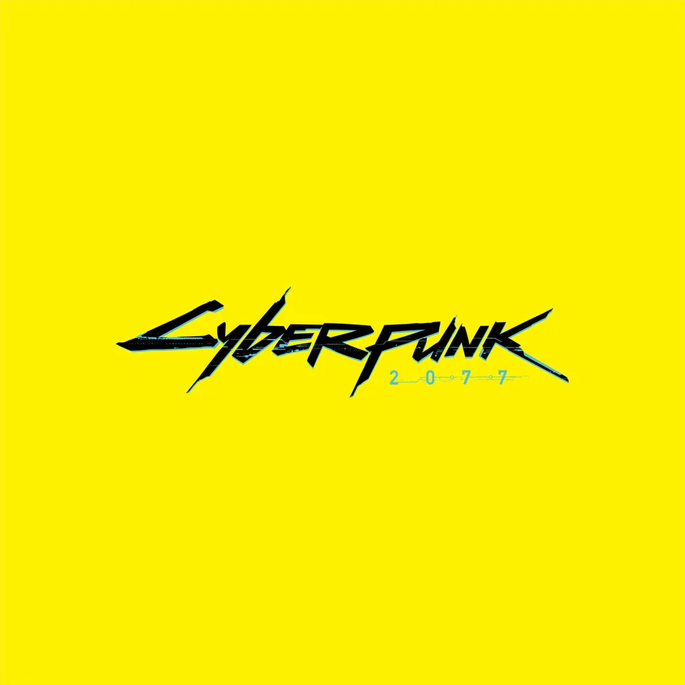
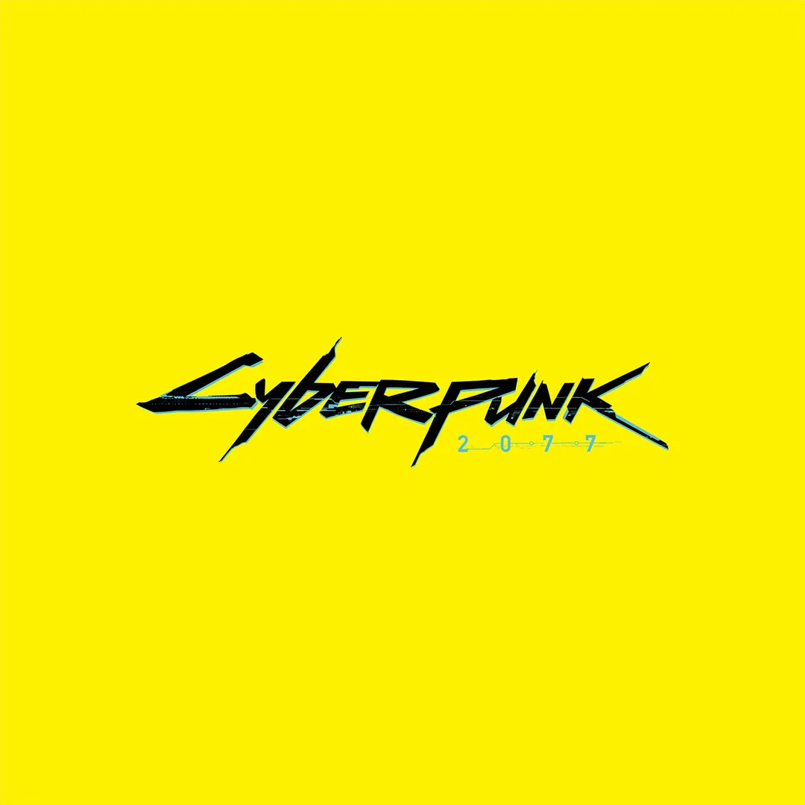
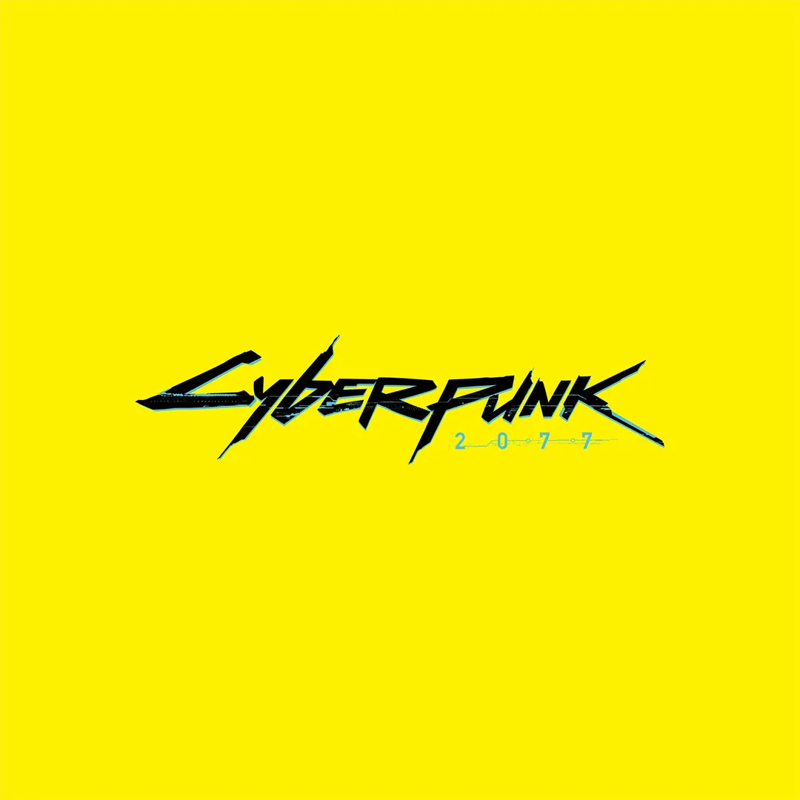
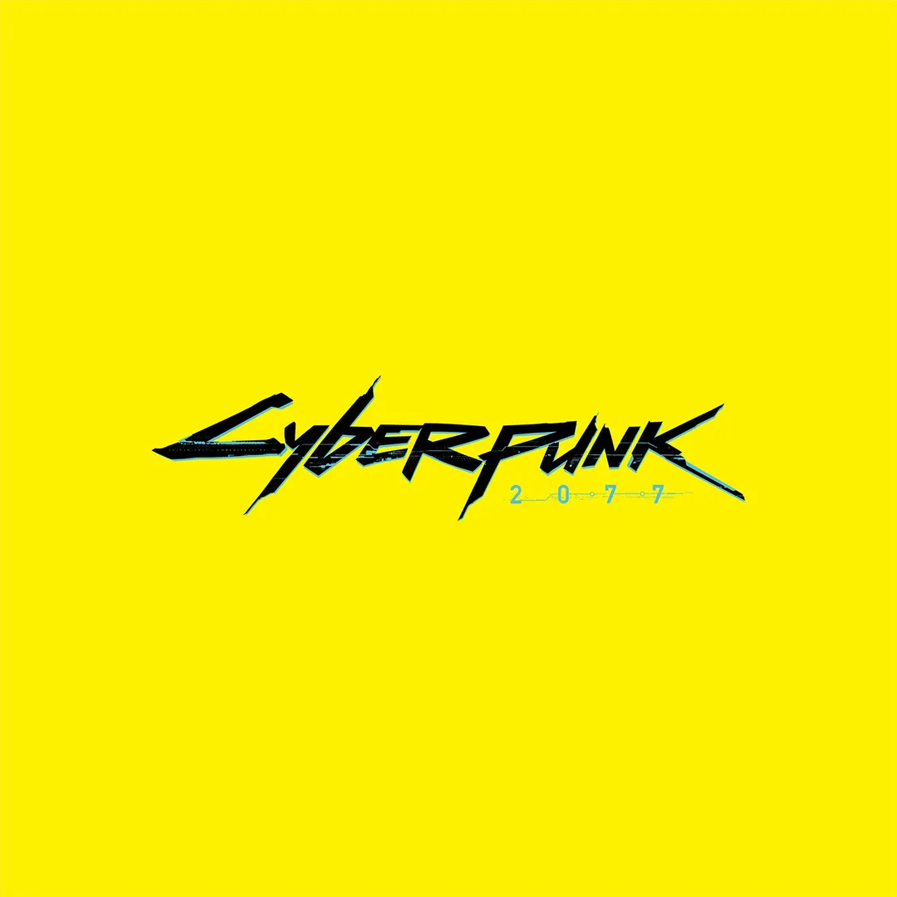

 


Cyberpunk 2077 es un videojuego de rol y acción en mundo abierto desarrollado por CD Projekt Red. Ambientado en la futurista Night City, combina exploración, narrativa ramificada y mejoras cibernéticas que modifican las habilidades del protagonista.
El jugador encarna a “V”, un mercenario personalizable. El juego mezcla combate, sigilo, hackeo y conducción. Las decisiones y la personalización influyen en la historia y en las habilidades disponibles.
Existen diversos enfoques: sigilo, combate directo y hacking. Además hay tres trasfondos iniciales (Nómada, Street Kid y Corpo) que afectan opciones de diálogo y rutas de juego.
Los principales estilos de jugador se agrupan en tres arquetipos:
Especialistas en movilidad y supervivencia fuera de la ciudad. Buen manejo de vehículos y adaptación a entornos abiertos.
Conocimiento de las calles y redes criminales. Ventajas en misiones urbanas y trato con pandillas.
Ex-miembros de corporaciones con recursos y contactos. Enfoque en manipulación social y opciones de diálogo estratégicas.
| 2020 | 2021 | 2022 | 2023 | 2024 | 2025 | |
|---|---|---|---|---|---|---|
| Pico de jugadores concurrentes | 1,054,388 | 30,000 | 118,285 | 200,000 | 75,000 | 70,422 |
| Jugadores promedio concurrentes | 700,000 | 20,000 | 60,000 | 100,000 | 50,000 | 48,000 |
Bienvenido a Night City |
Phantom Liberty — New Ways to Play |
Análisis Phantom Liberty |
Cambios Season 4 |